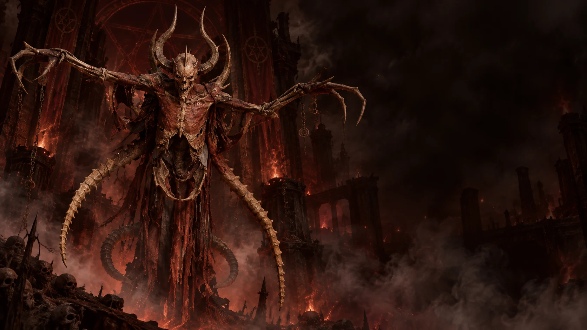

Großes Übel · Ältester der Brüder
Mephisto
Der älteste und wohl subtilste Bruder. Mephisto muss seine Opfer nicht beherrschen: Er lässt Misstrauen, Fanatismus und Rachsucht in ihnen wachsen, bis sie seine Arbeit selbst verrichten. Ganze Städte haben sich gegenseitig ausgelöscht, ohne dass Mephisto auch nur einen Schritt aus der Hölle getan hatte.
In Diablo III nutzte er Adria als Werkzeug und lenkte Leahs Schicksal aus dem Hintergrund. Zu Beginn von Diablo IV tritt er als Wolf auf und bietet dem Wanderer seine Hilfe gegen Lilith an — ein Angebot, das nichts von seiner wahren Absicht verrät.
- Ursprung
- Aus dem ersten Kopf Tathamets
- Domänen
- Hass, Fanatismus, Paranoia, Rachsucht
- Zitat
- „Ich bin ewig, Kreatur. Der Hass überdauert alles.“
- Status
- Gebunden im Seelenstein — mehrfach befreit